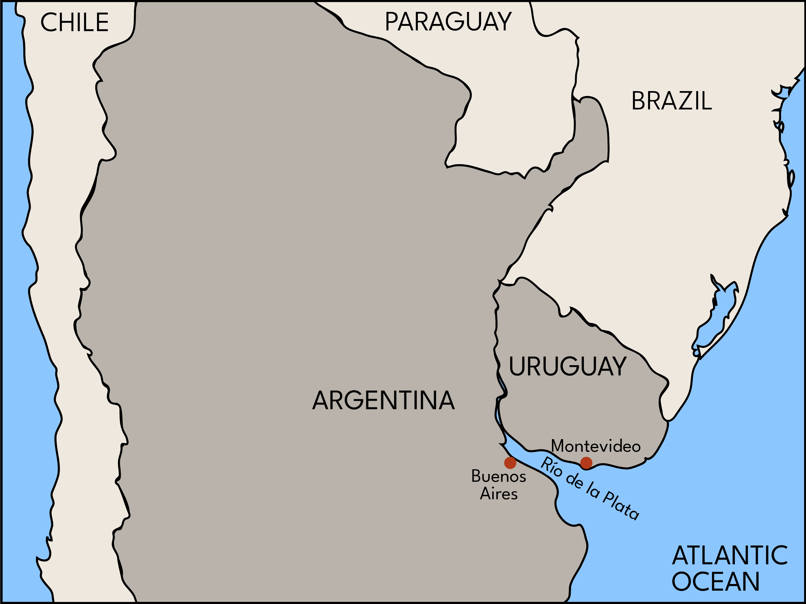

Tango
Tango music and dance emerged in Buenos Aires, Argentina and its close neighbor Montevideo, Uruguay during the late nineteenth century. Milonga, the tango’s immediate precursor, began as a new way to dance to the rhythm of the habanera, which originated in Cuba.


The habanera was a hit in Spain; Georges Bizet wrote what would become a very famous one for his opera, Carmen, set in the Spanish city of Sevilla. From Europe, the habanera re-crossed the Atlantic and circulated throughout Latin America, including in Buenos Aires and Montevideo, located on either side of the Río de la Plata on the Atlantic coast of South America.

People of African descent, both enslaved and free, were a significant presence in Buenos Aires and Montevideo during the colonial and early national periods. (Argentina and Uruguay declared their independence from Spain in 1816 and 1825, respectively; the two nations definitively abolished slavery in 1861 and 1842.) These communities played a central role in developing the choreography and music of the milonga and tango. Much of this choreography originated with the candombe, a form of dance and drum-based music popular among blacks on both sides of the Río de la Plata in the nineteenth century.
This music and dance also figured in the parades of the comparsas, the troupes who performed in the pre-Lenten Carnival celebrations. Prominent in these celebrations were troupes composed of rich, young white men wearing blackface and imitating black dancing. This racist mockery may actually have played a significant role in the development of the tango. According to some sources, in this period the word "tango" actually meant to dance like black people. The tango "Tan rico el negro (This Black Guy is So Rich)" recorded in Buenos Aires in 1912, reveals that Argentines often associated the tango with black people.

However, by the twentieth century, Argentine intellectuals were committed to the idea of Argentina as a white nation; as the tango came to symbolize the nation, these intellectuals downplayed the genre’s connection to the African diaspora. The massive waves of Italian and Spanish immigration that came to Argentina in the years between 1880 and 1930 reduced the demographic prominence of black people, a process that made it easier for these intellectuals to ignore this segment of the nation's population. This racism was so effective that when the Uruguayan writer Vicente Rossi published Cosas de Negros in 1926, arguing that the tango's roots lay in black music and dance, the book was considered extremely controversial.

Meanwhile, tango developed a new origin myth that located the music's origins in the brothels and gritty streets of Buenos Aires, a fantasy world populated by tough guys (compadritos) and beautiful dancing girls (milonguitas). When tango songs with lyrics became common in the 1920s, these were the stories they told. The title of "Milonguita," here presented in an instrumental version, reflects the association between the tango and this romantic, urban underworld.
In 1913 and 1914, tango became a major phenomenon in Paris and in New York. The music and the dance were made to seem exotic in order to appeal to European and North American audiences. In particular, Argentine musicians often performed dressed as gauchos, or Argentine cowboys, something they would never have done in Buenos Aires. Musically, the word tango signaled the habanera beat in these early years. In this form, tango was an influential element in the transnational popular musical milieu during the first two decades of the history of recording, informing developments in the United States, Brazil, and the Caribbean
New York-based, African-American bandleader James Reese Europe recorded a version of the Argentine tango, "Irresistible," revealing his take on the habanera beat. Europe played tango as accompaniment for the famous, white dance team of Vernon and Irene Castle, but he was convinced of the tango's origins in the African diaspora. As he put it, "Both the tango and the fox-trot are really negro dances." More evidence of the tango's associations with blackness is "Underneath the Tango Moon," a coon song from 1913 that, apart from its title, bears no trace of the tango.

Changes in the music industry would soon reduce tango's international influence. The major labels -- Victor, Columbia, Odeon -- increasingly divided their popular music catalogues into two categories: North American music and the “local music” of far-flung places, which they deemed suitable only for those local markets or for US-based immigrant communities. As a result of this strategy, tango lost its prominence outside of Latin America. For audiences in Argentina and neighboring South American countries, the major labels recorded tango bands called "orquestas típicas," featuring a German-made squeeze-box instrument called the bandoneón. For now, these bands continued to play a dance music based on the habanera, as you can hear in "El Pollito," recorded by Celestino Ferrer's band in 1915. Meanwhile, in the United States, tango was trivialized as an exotic novelty. Tango would continue to evolve in Argentina, but it lost its influence on musical innovation in the United States.
Recorded now almost exclusively in Buenos Aires for a local audience, the tango was thoroughly transformed in the 1920s: the habanera became much less prominent, replaced by more subtle syncopations; the advent and improvement of recording technology encouraged the emergence of a new genre of tango songs with lyrics; and New Guard composers produced sophisticated compositions and arrangements, employing counterpoint, polyphony and complex harmonies. Examples of the innovative tango of the New Guard include Julio De Caro's "Muchacho" and "Sobre el pucho" as well as the Orquesta Típica Fresedo's "Mi refugio," written by Juan Carlos Cobián.
These tangos were a long way from the habanera-based music of the 1910s; the tango was experiencing a revolution comparable in scope to the one transforming jazz at the same time. However, thanks to the new structure of the global music business, this new tango was completely unknown in the United States.